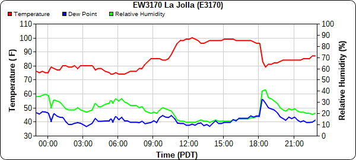

Jesse Robinett Climate of La Jolla California Low Clouds Oceanic Influence The Follies of 90 Day Forecasting More Resources
As mentioned in California Low Clouds and Climate of La Jolla, the sea breeze is

Given that oceanic air masses tend to be moist, I've included the dewpoint (a measure of the amount of moisture in the air) to make it clear precisely when oceanic influence was felt on this sweltering day. As is apparent, not much was present